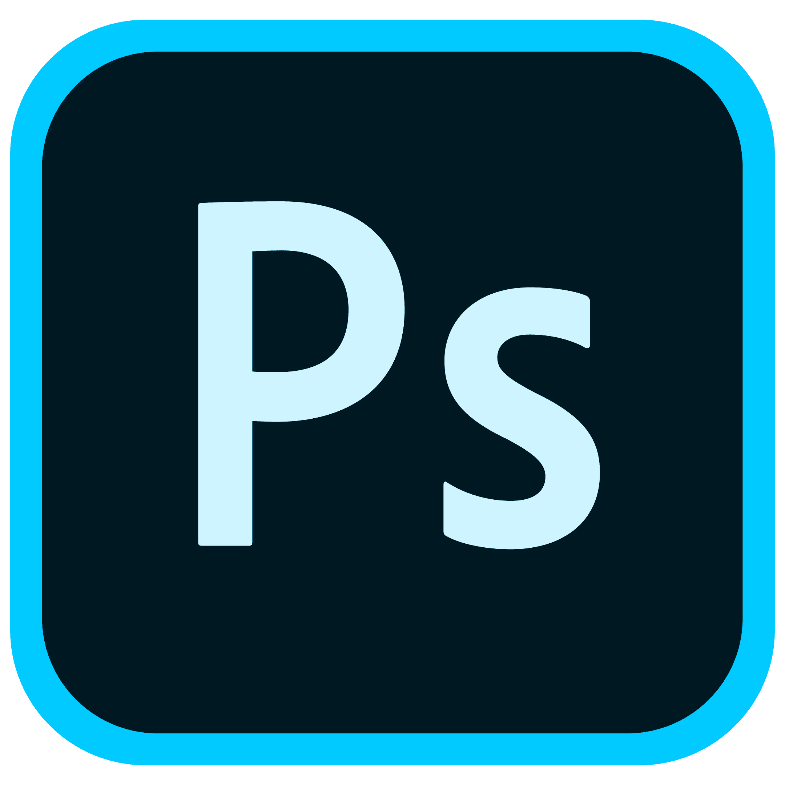
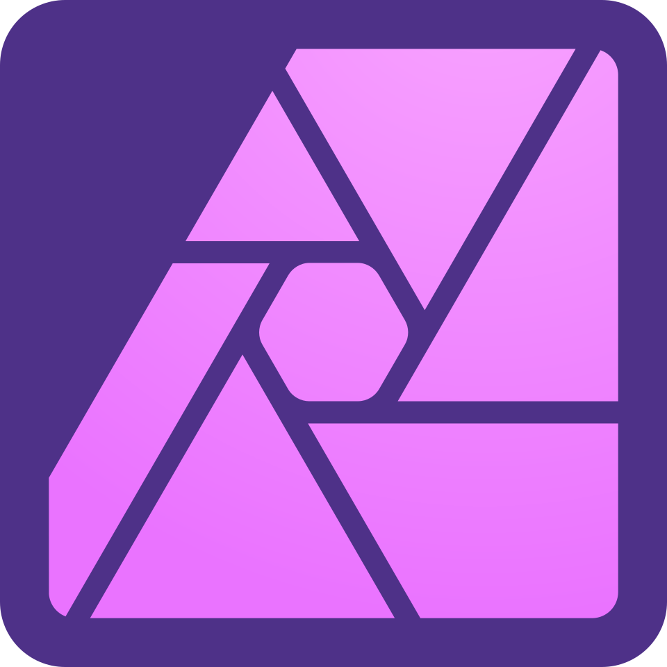
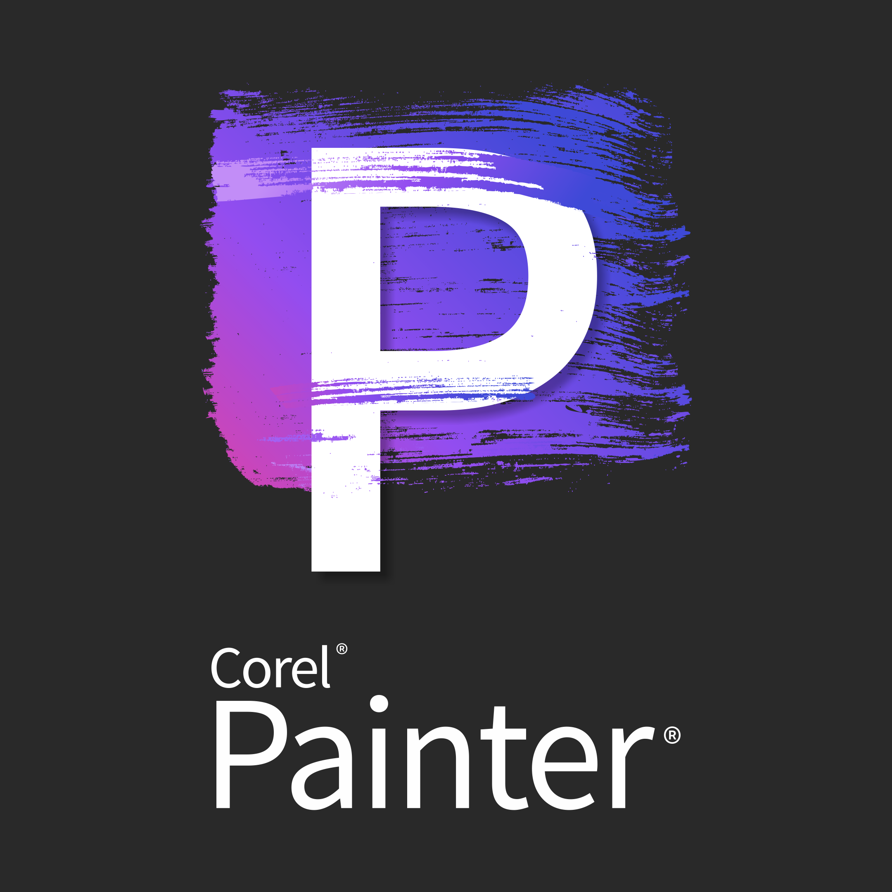
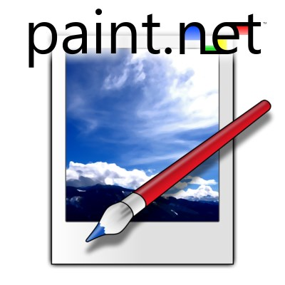
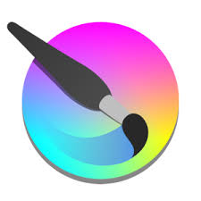

Класифікація програмного забезпечення
Існує безліч програм для роботи з растровою графікою. Вони відрізняються за ціною, функціональністю, доступністю та спрямованістю на різні типи користувачів.
💰 Платне професійне ПЗ
Adobe Photoshop
- Індустріальний стандарт для професіоналів
- Підтримка шарів, масок, фільтрів
- Інтеграція з Adobe Creative Cloud
- Потужні AI-інструменти
- Підписка від $20/місяць
Affinity Photo
- Доступна альтернатива Photoshop
- Одноразова оплата (без підписки)
- Підтримка PSD формату
- Професійні інструменти корекції
- Ціна близько $70
Corel PHOTO-PAINT
- Частина CorelDRAW Graphics Suite
- Зручний інтерфейс
- Редагування текстур і кольору
- Інтеграція з іншими продуктами Corel
- Підписка або одноразова покупка
🆓 Безкоштовне ПЗ
GIMP

- Найпотужніший безкоштовний редактор
- Відкритий код (Open Source)
- Підтримка шарів та плагінів
- Доступний для Windows, Mac, Linux
- Активна спільнота користувачів
Paint.NET
- Проста та легка у використанні
- Підтримка шарів
- Зрозумілий інтерфейс
- Тільки для Windows
- Ідеально для початківців
Krita
- Спеціалізація на цифровому малюванні
- Підтримка графічних планшетів
- Понад 100 професійних кистей
- Інструменти для анімації
- Безкоштовна з відкритим кодом
🎓 Вибір ПЗ за рівнем підготовки
Для початківців:
Paint.NET — простий інтерфейс, базові функції, безкоштовно для Windows
PhotoScape X — колажі, GIF-анімація, пакетна обробка
Canva — онлайн-платформа з готовими шаблонами
Для просунутих користувачів:
GIMP — повнофункціональний безкоштовний редактор
Affinity Photo — професійні можливості за доступною ціною
Corel PaintShop Pro — комплексний інструментарій
Для професіоналів:
Adobe Photoshop — індустріальний стандарт
Capture One Pro — професійна RAW-обробка
DxO PhotoLab — автоматичне шумозниження та корекція
📊 Порівняння програм за критеріями
| Програма | Ціна | Складність | Платформи | Призначення |
|---|---|---|---|---|
| Photoshop | Підписка $20+/міс | Висока | Win, Mac | Професійна обробка |
| GIMP | Безкоштовно | Середня | Win, Mac, Linux | Універсальна |
| Affinity Photo | $70 одноразово | Середня | Win, Mac, iPad | Професійна |
| Paint.NET | Безкоштовно | Низька | Windows | Базова обробка |
| Krita | Безкоштовно | Середня | Win, Mac, Linux | Цифровий живопис |
💡 Поради при виборі ПЗ
- Визначте свої потреби: фотографія, дизайн, ілюстрація чи хобі
- Перевірте системні вимоги програми
- Скористайтеся пробною версією перед покупкою
- Врахуйте наявність навчальних матеріалів та спільноти
- Розгляньте безкоштовні альтернативи для початку